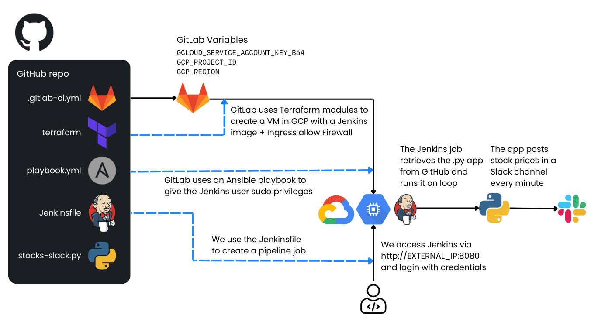

This project demonstrates how to automate the creation of a Jenkins server on a Google Cloud Platform (GCP) virtual machine (VM) using GitLab, Terraform, and Ansible. Once the Jenkins server is up and running, you can use it to execute a Python application that posts automated stock price messages into a Slack channel.
Below is an architectural diagram illustrating the process:

How it Works
GitLab runs a CI/CD pipeline that:
- Uses Terraform to create:
- A new VM instance in GCP with a preconfigured Jenkins image (from the GCP Marketplace).
- A firewall rule allowing external access to Jenkins on port 8080.
- Uses Ansible to grant jenkins user privileges within the VM for running tasks with sudo.
- Jenkins is then accessible via
http://EXTERNAL_IP_OF_THE_VM:8080
- You log into Jenkins with the provided credentials and create a Pipeline Job using the Jenkinsfile from this repository. This job:
- Clones a Python application (stocks-slack-py) from GitHub.
- Executes the Python app, which sends stock price messages to a specified Slack channel via a Slack webhook.
Replication Steps
-
Create a Slack Webhook
- Create a Slack channel for your stock messages.
- Go to Slack API and create a new Slack App.
- In your new Slack App, enable “Incoming Webhooks”.
- Add a New Webhook to your workspace and specify the channel you created.
- Copy the webhook URL, which typically looks like:
https://hooks.slack.com/services/XXXXXXXXX/XXXXXXXXX/XXXXXXXXXXXXXXXXXX
- Keep this URL safe. You will paste it later into your Jenkinsfile or pipeline configuration.
-
Create a Service Account on GCP
- Go to the GCP Console → IAM & Admin → Service Accounts.
- Create a new service account, giving it a descriptive name (e.g., gitlab-jenkins-sa).
- Assign it the following roles:
- Cloud OS Config Service Agent
- Compute Admin
- Compute OS Admin Login
- Service Account User
- Service Usage Admin
- Create a JSON key for this service account (in the GCP Console, under “Keys” → “Add Key” → “Create new key” → Select JSON).
- Download the JSON key file.
-
Encode the JSON Key
- In your GCP Cloud Shell or any environment with base64 available, run:
echo -n "PASTE JSON FILE CONTENTS HERE WITHOUT CHANGING ANYTHING" | base64
- Copy the base64-encoded output. This is what you will store in GitLab as a variable.
-
Set Up GitLab CI/CD Variables
- In GitLab, open your project and go to Settings → CI/CD.
- Expand Variables.
- Click Add Variable and create the following variables:
GCLOUD_SERVICE_ACCOUNT_KEY_B64 → Paste the base64-encoded JSON key here.GCP_PROJECT_ID → Use your GCP project ID (e.g., my-gcloud-project).GCP_ZONE → Use your GCP zone (e.g., us-central1-a).
- Save these variables.
-
Trigger the GitLab CI/CD Pipeline
- Go to your repository in GitLab that contains the .gitlab-ci.yml file.
- Open the CI/CD page and manually run the pipeline (or push a commit).
- The pipeline will start, and GitLab will:
- Use Terraform to create the VM.
- Use Ansible to provision the Jenkins server within that VM.
-
Get Jenkins Access Information
- Open the pipeline job logs in GitLab by clicking on the job under the CI/CD → Jobs page.
- In the logs output, you should see:
- The external IP of the VM.
- The username and password to log into Jenkins.
-
Log Into Jenkins
- Open a browser and navigate to:
http://EXTERNAL_IP_OF_THE_VM:8080
- Use the username and password from the GitLab job output to access Jenkins.
-
Install the “Pipeline” Plugin in Jenkins
- In Jenkins, click “Manage Jenkins” (sometimes labeled “Admin Jenkins”) from the left menu.
- Go to “Manage Plugins”.
- Select “Available Plugins” and look for “Pipeline”.
- Install the plugin (check the box, then install).
- Wait until the installation completes, then return to the Jenkins homepage by clicking the Jenkins logo in the top-left corner.
-
Create a Pipeline Job
- From the Jenkins homepage, click “New Item” (or “Create a Job”).
- Enter a job name (e.g., stocks-slack-pipeline) and select “Pipeline”.
- Scroll down to the Pipeline section.
- In Definition, choose “Pipeline script”.
- Paste the contents of the Jenkinsfile from this GitHub repository into the editor.
- Replace the placeholder
INSERT WEBHOOK URL HERE with your actual Slack webhook URL.
- Click Save.
-
Build the Pipeline
- On the left menu of your new pipeline job, click “Build Now”.
- Watch the build progress. The Python app will run inside your Jenkins VM and send stock prices to the specified Slack channel.
- After a couple of minutes, check your Slack channel to see the stock price messages.
Congratulations! You have replicated the workflow: GitLab → Terraform + Ansible → Jenkins → Python → Slack.
Cleanup: If you no longer need the VM, delete it to avoid unnecessary charges. To do this, navigate to Compute Engine → VM Instances in your GCP Console, locate the Jenkins VM, and click Delete.
Customization: You can extend this pipeline for other use cases, such as deploying containerized applications, running tests, or more complex automation tasks.
Happy Automating!